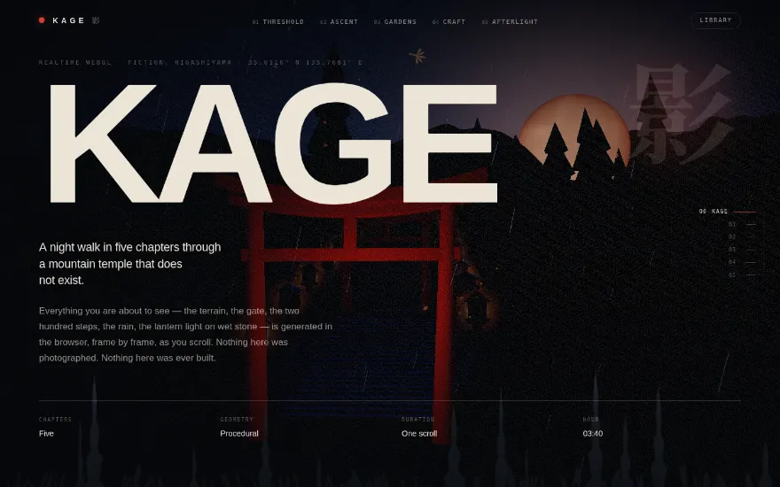
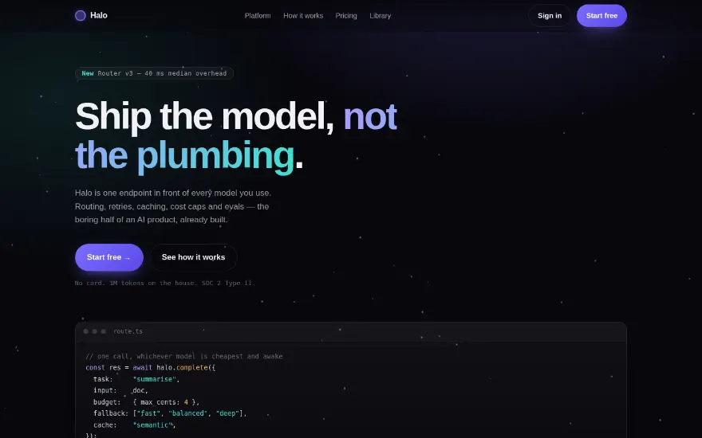
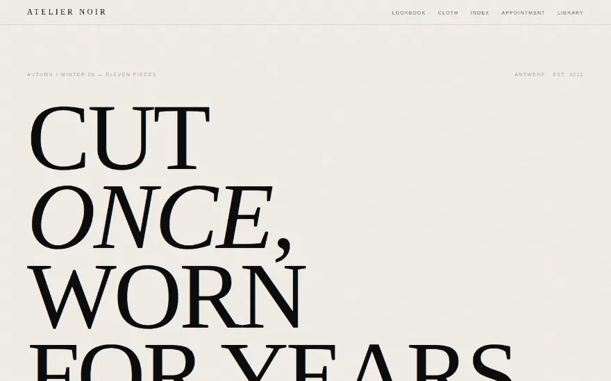
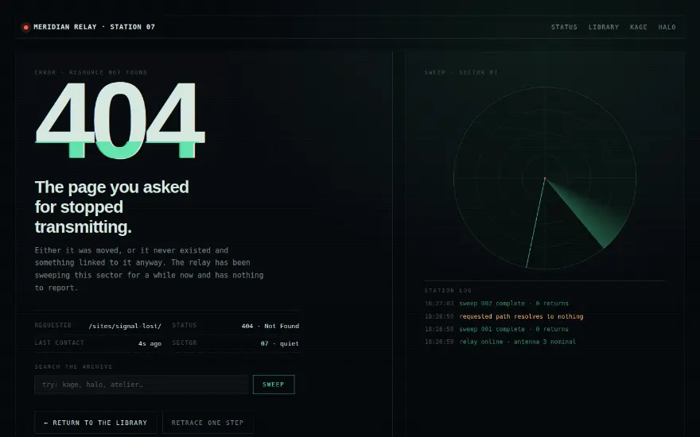
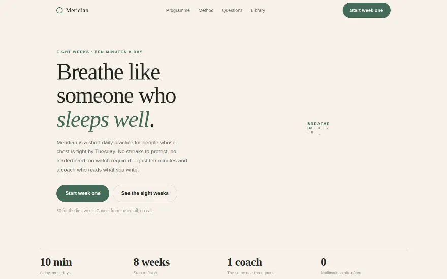

Five pages · built, not mocked up
Landing pages
that actually
ship
Complete, responsive, accessible pages — not screenshots of pages. Open any of them, read the source, take what you need.
- Pages
- 5
- Frameworks
- 0
- Trackers
- 0
- Licence
- Yours
Showing 5 pages
-

FlagshipA five-chapter night walk through a temple that does not exist. Terrain, gate, rain, lanterns and moon are generated at runtime and driven by scroll.
-

The full developer-product shape: hero with live canvas, code sample, feature grid, three-step explainer, metrics and pricing.
-

A light, paper-grained editorial: oversized serif, a broken lookbook grid, a marquee and an index table that reads like a price list.
-

A 404 that behaves like a station losing contact: a live radar sweep, a scrolling log, and a search box that really does route you somewhere.
-

Warm, quiet and unhurried: a breathing animation that keeps time, an eight-week outline, a coach quote and an honest FAQ.
Nothing matches that.
How they're built
Five rules, applied to every page here.
- 01
No framework, no build step
Plain HTML, CSS and modules. The only dependency anywhere in this library is three.js, served from this origin.
- 02
No stock imagery
Every image is generated: the cutouts and stills in Kage are rendered from its own 3D scene, the rest is colour and type.
- 03
Motion with a reason
If it moves, it is carrying meaning. Every page has a reduced-motion path that keeps the whole reading experience.
- 04
Real interaction
Search filters, menus open, forms answer, the 404 routes you somewhere. Nothing on screen is a decorative lie.
- 05
Relative paths only
Every asset is local and relatively linked, so the whole library also works from a subfolder or a file server.
Questions
Short answers.
Can I use these?
Yes — copy anything you find useful. The brands, products and people in them are invented, so replace the words before you ship.
Why is Kage so much bigger than the others?
It renders a whole environment in real time. The other four are single files and load in well under a second.
What happens without WebGL?
Kage falls back to a static gradient and stays completely readable. Nothing else on the site needs WebGL at all.
Is anything tracked?
No analytics, no cookies, no third-party requests. Every byte comes from this domain.